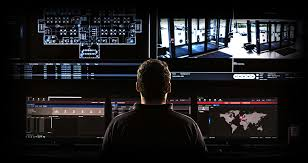

5 Arsye Pse Siguria Fizike Është Kaluese për Biznesin Tuaj
Në një epokë ku siguria kibernetike dominon titujt, rëndësia e sigurisë fizike mund të anashkalohet ndonjëherë. Megjithatë, mosrespektimi i masave të sigurisë fizike mund të lërë biznesin tuaj të pambrojtur ndaj një mori rreziqesh. Ja pesë arsye bindëse pse investimi në sigurinë fizike është thelbësor për mbrojtjen e aseteve tuaja dhe sigurimin e vazhdimësisë së biznesit.
1. Parandalimi i Vjedhjeve
Një nga arsyet më të dukshme për të prioritetizuar sigurinë fizike është për të parandaluar vjedhjet. Qoftë mallra, pajisje ose informacione të ndjeshme, bizneset janë gjithmonë në rrezik nga hajdutët. Zbatimi i masave të tilla si kamera survejimi, sisteme të kontrollit të hyrjes dhe roje sigurie mund të zvogëlojë ndjeshëm gjasat e vjedhjeve në ambientet tuaja. Masat e dukshme të sigurisë veprojnë si një pengesë, duke dekurajuar ndërhyrësit e mundshëm nga tentimi për të depërtuar në objektet tuaja.
2. Mbrojtja e Aseteve
Bizneset investojnë burime të konsiderueshme për të blerë asete thelbësore për operacionet e tyre, që nga makineritë e shtrenjta deri te të dhënat e pronarit. Masat e sigurisë fizike ndihmojnë në mbrojtjen e këtyre aseteve nga dëmtimi, vandalizmi ose qasja e paautorizuar. Duke kontrolluar se kush mund të hyjë në zona specifike të objektit tuaj dhe duke monitoruar aktivitetet përmes survejimit, mund të zvogëloni rrezikun e humbjes ose keqpërdorimit të aseteve.
3. Siguria e Punonjësve
Sigurimi i sigurisë dhe mirëqenies së punonjësve duhet të jetë një prioritet kryesor për çdo biznes. Masat e sigurisë fizike kontribuojnë në krijimin e një ambienti pune të sigurt ku punonjësit ndihen të sigurt dhe të mbrojtur. Kjo jo vetëm që rrit moralin, por gjithashtu përmirëson produktivitetin, pasi punonjësit mund të fokusohen në detyrat e tyre pa u shqetësuar për kërcënimet e mundshme. Nga parkingjet e ndriçuara mirë deri te protokollet e përgjigjes emergjente, investimi në masat e sigurisë fizike tregon një angazhim për mirëqenien e punonjësve.
4. Përputhshmëria Rregullatore
Shumë industri janë subjekt i kërkesave rregullatore që kërkojnë standarde të caktuara të sigurisë fizike. Dështimi për t'u përputhur me këto rregullore mund të rezultojë në pasoja të rënda, duke përfshirë gjoba dhe përgjegjësi ligjore. Duke zbatuar masa të fuqishme të sigurisë fizike, bizneset mund të sigurojnë përputhshmëri me rregulloret specifike të industrisë, të tilla si ato që rregullojnë mbrojtjen e të dhënave të ndjeshme ose trajtimin e materialeve të rrezikshme. Përputhshmëria jo vetëm që zvogëlon rreziqet ligjore, por gjithashtu përmirëson reputacionin dhe besueshmërinë e biznesit.
5. Vazhdimësia e Biznesit
Ndërprerjet në operacionet e biznesit mund të kenë pasoja të konsiderueshme financiare, duke filluar nga humbja e të ardhurave deri te dëmtimi i reputacionit. Siguria fizike luan një rol të rëndësishëm në sigurimin e vazhdimësisë së biznesit duke minimizuar ndikimin e kërcënimeve të mundshme, të tilla si fatkeqësitë natyrore, vandalizmi ose qasja e paautorizuar. Duke investuar në masa të tilla si sistemet e rezervimit të energjisë, kontrolli i hyrjes dhe planet e rikuperimit nga fatkeqësitë, bizneset mund të zvogëlojnë rreziqet dhe të ruajnë operacionet edhe në rrethana të pafavorshme.
Në përfundim, siguria fizike është një aspekt integral i menaxhimit gjithëpërfshirës të rreziqeve për bizneset e të gjitha madhësive. Duke prioritetizuar parandalimin e vjedhjeve, mbrojtjen e aseteve, sigurimin e sigurisë së punonjësve, mbajtjen e përputhshmërisë rregullatore dhe mbrojtjen e vazhdimësisë së biznesit, bizneset mund të zvogëlojnë rreziqet dhe të përmirësojnë qëndrueshmërinë e përgjithshme. Investimi në masa të fuqishme të sigurisë fizike nuk është vetëm një vendim i mençur biznesi; është një kërkesë themelore për suksesin afatgjatë në mjedisin dinamik dhe gjithnjë e më kompleks të biznesit të sotëm.
Përse duhet te na zgjidhni ne
Ne jemi nje biznes i cili ndërthur eksperiencën 13 vjeçare me energjinë dhe risitë e drejtuesve të rinj. Parimet e punes tonë janë:
- Besueshmëria
- Integriteti
- Veprimi me iniciativë
- Standarte të besueshme
- Konfidencialiteti
Çfarë ofrojmë ne
Sigurimin fizik
Ruajtjen e objekteve përmes personelit të licensuar,shoqërimin e personaliteteve apo VIP përmes flotës së automjeteve ne pronësinë tonë apo të partnerëve.
Sigurimin elektronik
.jpg)
Ruajtjen e objekteve dhe banesave përmes sistemeve të alarmit antivjedhje.Parandalimin dhe lajmërimin në kohë përmes sistemeve te pikasjes së zjarrit në rastet e rënies së tij në biznes apo banesë.Sistemet e kamerave dhe ruajtja e pamjeve dhe të dhënave të siguruara përmes këtyre sistemeve.Verifikimi i sinjalit përmes grupeve tona ta gatshme 24/7.
Shërbime të integruara ruajtje dhe administrimi
Në bashkëpunim me partnerët tanë ne u ofrojmë bizneseve te vogla dhe të mesme paketa të plota që përfshijnë sistemet e alarmit,kamera dhe ruajtja e të dhënave,verifikim sinjali apo siguri fizike,website(ne paketat e biznesit te vogel) sisteme administrimi të magazinës,klientëve ,shitjeve apo administrimit si dhe fiskalizimin.Në këtë mënyrë ne synojmë të investojmë te ju duke ju liruar nga shqetësimet e shpenzimet e kota duke u fokusuar në atë që dini të bëni më mirë biznesin tuaj.Këto paketa vijnë pa kosto fillestare ,me pagesa periodike dhe një shumllojshmëri kombinimesh në përputhje me nevojat tuaja.